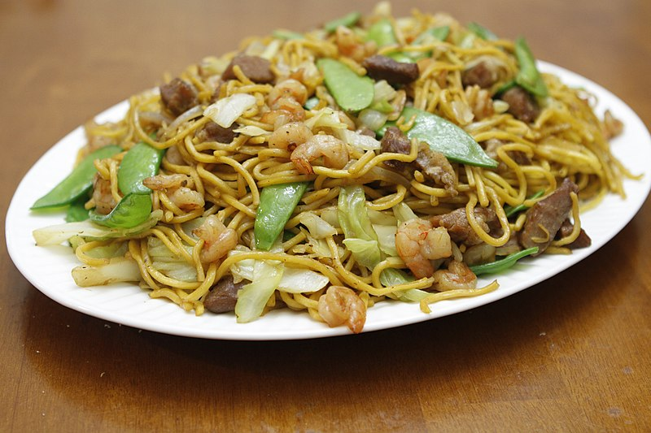

Image source: pulaw on flickr
Note: results may vary from the image above!
Pancit refers to various types of noodle dishes in the Philippines. Originally introduced by Chinese immigrants, dishes have since been modified and changed and now play a promiment role in the local cuisine. There are many different types of pancit dishes throughout the country, and the way they are prepared usually depends on the region.
This recipe offers a quick and easy approach to the dish. Once you've had a go at this recipe, you may want to try different variations of the dish, including batchoy, pancit bihon, pancit abra, pancit palabok, pancit batchoy, pancit lomi and much more. Or you may just want to try a different Filipino dish found on this website's homepage.
Recipe source: Heather Maurer on allrecipes